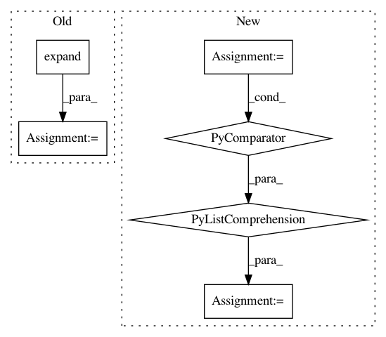

7570ee1d758c93dd4054009fc12be6cc31b54031,gpytorch/lazy/interpolated_lazy_tensor.py,InterpolatedLazyTensor,_get_indices,#InterpolatedLazyTensor#Any#Any#,261
Before Change
left_interp_indices = left_interp_indices.unsqueeze(-1).expand(n_data, n_interp, n_interp).contiguous()
right_interp_indices = right_interp_indices.unsqueeze(-2).expand(n_data, n_interp, n_interp).contiguous()
else:
left_interp_indices = left_interp_indices.unsqueeze(-1).expand(n_data, n_interp, n_interp).contiguous()
right_interp_indices = right_interp_indices.unsqueeze(-2).expand(n_data, n_interp, n_interp).contiguous()
base_var_vals = self.base_lazy_tensor._get_indices(left_interp_indices.view(-1), right_interp_indices.view(-1))
base_var_vals = base_var_vals.view(left_interp_indices.size())
res = (interp_values * base_var_vals).sum(-1).sum(-1)
After Change
// Batch compute values that will be non-zero for row k
left_interp_indices = left_interp_indices.unsqueeze(-1).expand(n_data, n_interp, n_interp).contiguous()
right_interp_indices = right_interp_indices.unsqueeze(-2).expand(n_data, n_interp, n_interp).contiguous()
batch_indices = [
batch_index.unsqueeze(1).repeat(1, n_interp ** 2).view(-1)
for batch_index in batch_indices
]
base_var_vals = self.base_lazy_tensor._get_indices(
left_interp_indices.view(-1), right_interp_indices.view(-1), *batch_indices
)
base_var_vals = base_var_vals.view(left_interp_indices.size())
In pattern: SUPERPATTERN
Frequency: 3
Non-data size: 6
Instances
Project Name: cornellius-gp/gpytorch
Commit Name: 7570ee1d758c93dd4054009fc12be6cc31b54031
Time: 2018-11-25
Author: gpleiss@gmail.com
File Name: gpytorch/lazy/interpolated_lazy_tensor.py
Class Name: InterpolatedLazyTensor
Method Name: _get_indices
Project Name: asappresearch/sru
Commit Name: faf3aa876462323f2fa721ebd633752d6489808f
Time: 2020-09-18
Author: taolei@csail.mit.edu
File Name: sru/modules.py
Class Name: SRU
Method Name: forward
Project Name: cornellius-gp/gpytorch
Commit Name: cea478600970228f6b8dd12b067facde3d5d261f
Time: 2019-05-08
Author: balandat@fb.com
File Name: gpytorch/models/exact_gp.py
Class Name: ExactGP
Method Name: get_fantasy_model